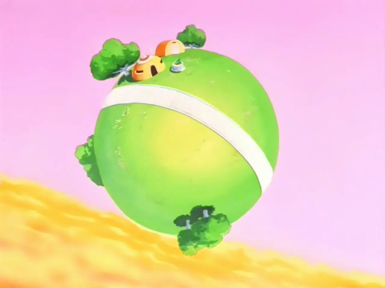
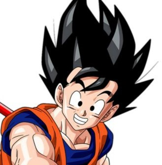
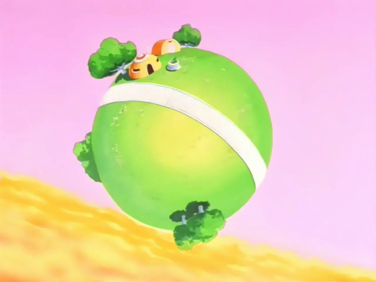
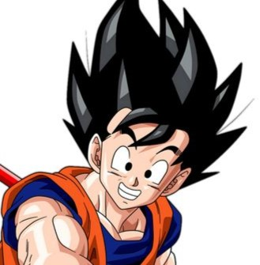
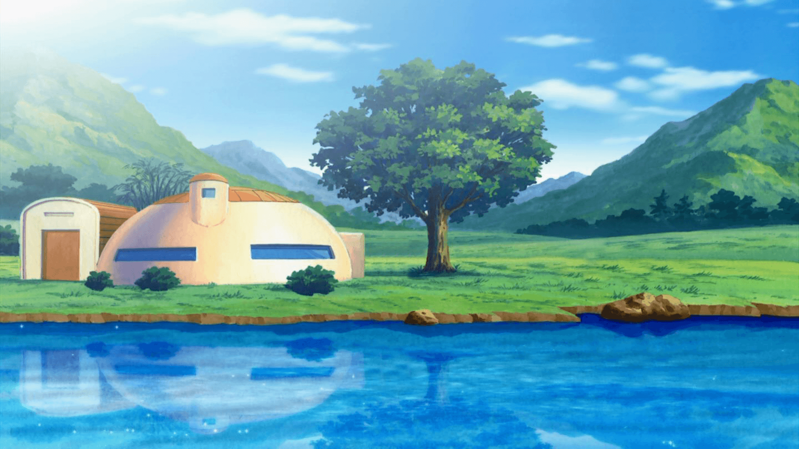
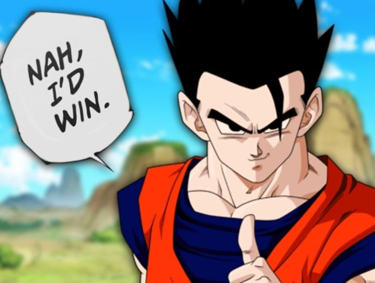
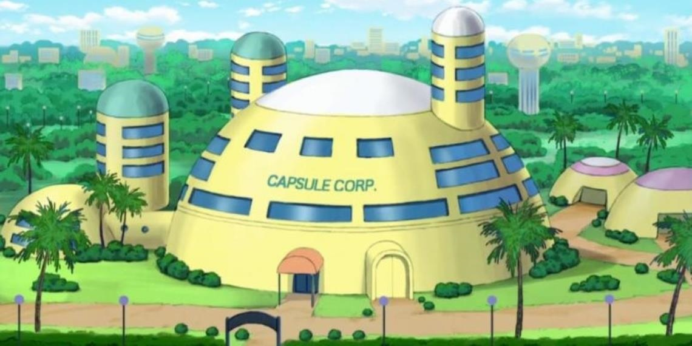
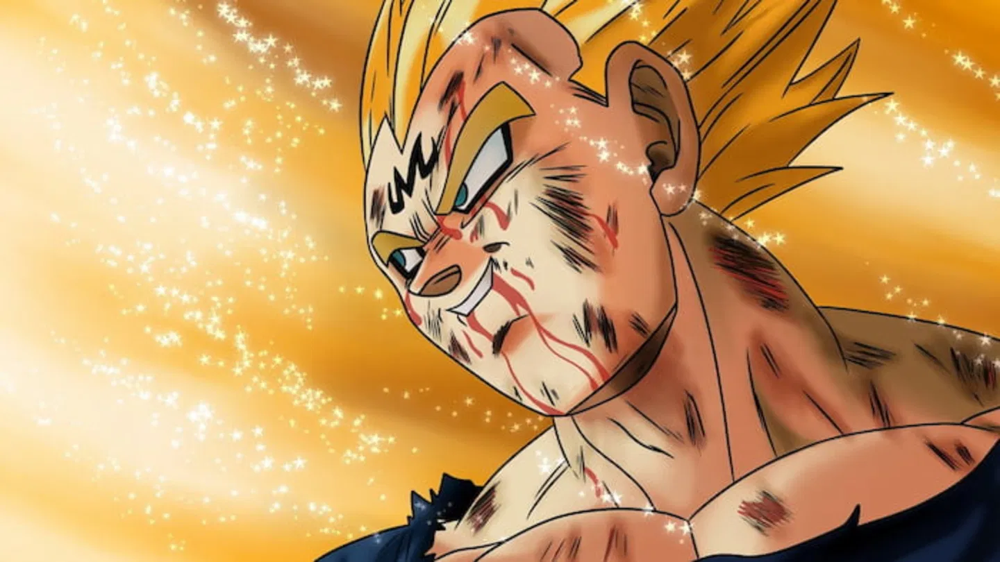

Fiel a su raza, Goku posee un espíritu combativo sumamente marcado, y es incapaz de resistirse a pelear con alguien que le parezca fuerte aun en los momentos más inoportunos. Es extremadamente competitivo y entrena constantemente, ya que nunca está satisfecho con su fuerza actual y siempre busca ir más allá.


Goku
Gohan es un joven bastante tímido desde su infancia, con carácter bondadoso (inculcado por sus padres) y su inteligencia lo destacan por sobre el resto de los personajes de la serie. Gohan parece ser extremadamente inteligente, incluso a una edad temprana ya es mucho más inteligente que su padre y a menudo le impide (o intenta impedirle) que haga cosas tontas.


Es extremadamente arrogante, orgulloso y trabajador; constantemente se refiere a su herencia y estatus real a lo largo de la serie. Cree que debe ser considerado como el luchador más fuerte del Universo y se obsesiona con superar a Goku después de perder su primera batalla con Los Guerreros Z. es el verdadero protagonista de la serie